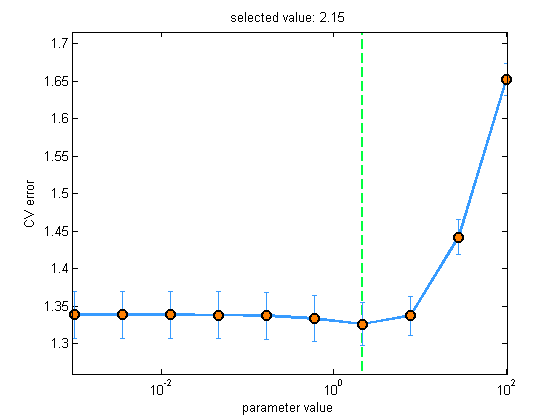
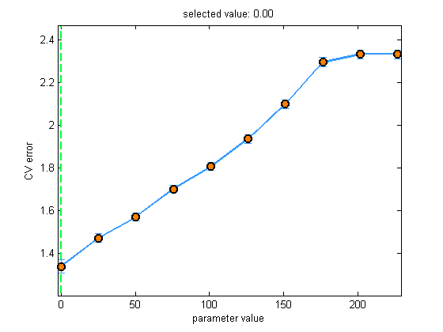

Contents
Simple Test of linregFit()
load servo
lossFn = @(y, yhat)mean((y-yhat).^2);
model = linregFit(Xtrain, ytrain, 'lambda', 0, 'standardizeX', false);
yhat = linregPredict(model, Xtest);
mse = lossFn(yhat, ytest)
mse =
2.7281
[ytrain, ybar] = centerCols(ytrain);
w = Xtrain \ ytrain;
w0 = ybar - mean(Xtrain)*w;
assert(isequal(w, model.w));
assert(isequal(w0, model.w0));
CV over lambda
[model, bestLambda] = linregFit(Xtrain, ytrain, 'doPlot', true);
yhat = linregPredict(model, Xtest);
mse = lossFn(yhat, ytest)
mse =
3.1027
w = linregFitL2QR(mkUnitVariance(centerCols(Xtrain)),centerCols(ytrain), bestLambda);
assert(isequal(model.w, w));
model = linregFit(Xtrain, ytrain, 'kernelFn', @kernelRbfSigma, 'doPlot', true);
set(gca, 'YScale', 'log');
yhat = linregPredict(model, Xtest);
mse = lossFn(yhat, ytest)
mse =
3.0995

model = linregFit(Xtrain, ytrain, 'regType', 'L1', ...
'doPlot', true, 'fitMethod', 'interiorpoint');
yhat = linregPredict(model, Xtest);
mse = lossFn(yhat, ytest)
mse =
3.1027

model = linregFit(Xtrain, ytrain, 'regType', 'L1', 'kernelFn', @kernelRbfSigma,...
'lambda', 0.5:0.5:4, 'doPlot', true, 'fitMethod', 'interiorpoint', 'kernelParam', 3:0.5:4);
set(gca, 'YScale', 'log');
yhat = linregPredict(model, Xtest);
mse = lossFn(yhat, ytest)
mse =
3.5048